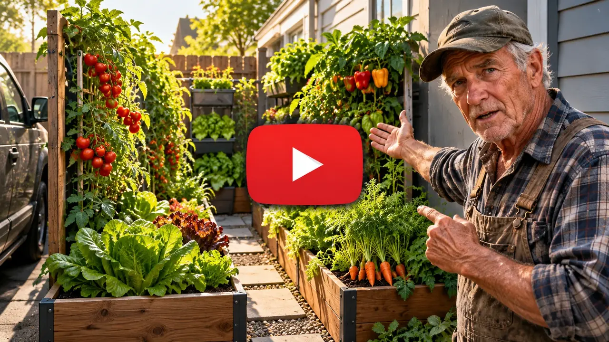

Small-Space Gardening • Free Video
A Surprising Way to Grow Fresh Food in a Space the Size of a Parking Spot
Think you need a big backyard to grow your own food? This short video reveals a different approach to making the most of the space you already have.

See the Small-Space Growing Method · Click to Watch
Want to grow more of your own food, but don't have much room to work with?
A small backyard, a side yard, even a strip next to the driveway may hold more possibilities than you realize. The key is knowing how to make better use of the space you already have.
Watch the video to see a different approach to small-space food growing — and decide whether it could work at your home.
This site is not a part of the Google website or Google Inc. Additionally, This site is NOT endorsed by Google or Youtube in any way. Google is a trademark of Google, Inc.
Home
Disclaimer
Privacy Policy
Contact
Terms
© 2026 Survival Times Today Official. All rights reserved.
Statements on this website have not been evaluated by the Food and Drug Administration. Products are not intended to diagnose, treat, cure or prevent any disease. If you are pregnant, nursing, taking medication, or have a medical condition, consult your physician before using our products.
Marketing Disclosure: This website is a marketplace. As such you should know that the owner has a monetary connection to the product and services advertised on the site. The owner receives payment whenever a qualified lead is referred but that is the extent of it. Please review the "Terms" section regarding links to Third Party policies and refunds.
Advertising Disclosure: This is an advertisement and not an actual news article, blog, or consumer protection update. This website and the products & services referred to on the site are advertising marketplaces. Any photographs of persons used on this site are models. The owner of this site does not provide medical advice, diagnosis or treatment. Products and services on this site only provides a service where consumers can obtain and compare.
ADVERTISEMENT